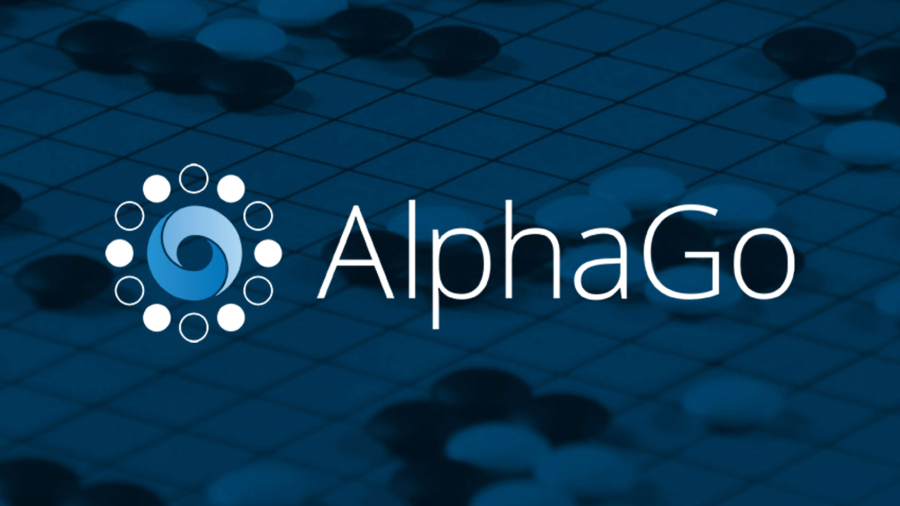

Искусственный интеллект: надежда или опасность для человечества?

О том, что роботы заменяют человека повсеместно, мы слышим едва ли не каждый день. По самым оптимистичным прогнозам, в ближайшие десятилетия машины оставят без работы миллионы людей. Но в большинстве случаев речь идет об узкоспециализированных программах, которые, хотя и могут заменить отдельно взятого специалиста, но уж никак не станут «альтернативой» Homo sapiens.
Не секрет, что искусственный интеллект уже может конкурировать с человеком. Самый яркий тому пример – созданная специалистами Google программа AlphaGo. Ранее различные программы уже одерживали верх над человеком в шашках, шахматах и нардах. Но вот древнекитайскую логическую игру го считали «слишком сложной для ИИ». В ней действительно присутствует глубокое стратегическое содержание. Дело в том, что в го почти невозможно перебрать все комбинации, и в силу этого ИИ сложно просчитать варианты развития событий. Тем не менее, созданная Google программа AlphaGo в 2016 году смогла обыграть чемпиона Европы по игре го Фаня Хуэя. Причем сделала она это с разгромным счетом 5:0.
Но как удалось добиться такого результата? Ведь, как мы уже говорили, здесь нельзя было применить обычные алгоритмы. Создатели AlphaGo разработали две нейронные сети: особые алгоритмы, которые имитировали работу цепочек нейронов в человеческом мозге. Одна сеть несла ответственность за определение текущей позиции на доске, а вторая применяла результаты анализа, которые были подготовлены первой сетью, чтобы выбрать следующее действие.
Как мы видим, прогресс в деле создания ИИ очевиден и описанные выше случаи – лишь одни из многих. Другой вопрос: что именно считать искусственным интеллектом и, более того, что можно вложить в содержание понятия «полноценный ИИ»? Этот вопрос волнует великие умы на протяжении десятилетий, но даже сейчас, в наш продвинутый информационный век, ответить на него очень трудно. В 1980 году американский философ Джон Роджерс Сёрл ввел термин «сильный искусственный интеллект». Речь идет о программе, которая будет представлять собой не просто модель разума, а станет разумом в буквальном смысле этого слова. В противовес этому сторонники «слабого искусственного интеллекта» оценивают ИИ лишь в контексте решения узкоспециализированных задач. Проще говоря, они не могут себе представить, чтобы машина действовала наравне с человеком.
Не менее важен и морально-этический аспект. Предположим, ученые создадут продвинутый ИИ, который заменит собой человека буквально во всех сферах. Но будет ли такая программа иметь привычную для человеческого общества мораль? Или же ее в принципе невозможно будет наделить такими качествами… Интересно, что ранее был введен специальный термин «чистый искусственный разум»: в этом случае машина понимает и решает вопросы, как настоящий человек, но лишена характерных для людей эмоций. Последнее, кстати, может стать конкурентным преимуществом машины перед человеком, но об этом позже.
Фантазии и реальность
Свою лепту в распространение тезиса об угрозе ИИ, конечно, внесли фантасты. Пожалуй, самый пугающий прогноз конца света – это «серая слизь». В этом случае неуправляемые самореплицирующиеся нано роботы, выполняя программу саморазмножения, поглотят все доступное им вещество на нашей планете.
Сейчас это звучит как бред, но многим этот сценарий не кажется таким уж невероятным. Шотландский ученый Данкан Форган даже предложил в 2015 году искать погибшие инопланетные цивилизации по «серой слизи». В случае такого развития сценария конца света, по его мнению, чужая планета будет покрыта «песком» из миниатюрных машин. Они будут отражать свет и резко повышать яркость планеты при ее прохождении по диску светила.
Но не все фантасты склонны видеть в роботах угрозу. Наиболее системно к вопросу развития ИИ подошел знаменитый Айзек Азимов, сформулировавший три закона робототехники:
1.Робот не может причинить вред человеку или своим бездействием допустить, чтобы человеку был причинен вред.
2.Робот должен повиноваться всем приказам, которые дает человек, кроме тех случаев, когда эти приказы противоречат Первому Закону.
3. Робот должен заботиться о своей безопасности в той мере, в которой это не противоречит Первому или Второму Законам.
Вывод
В любом случае пока что от ИИ пользы намного больше, чем вреда, и нет оснований думать, что «роботы замыслили против человека что-то плохое». Главный враг Homo sapiens – это не машины, не природные катаклизмы и даже не пришельцы из других миров, a главную опасность для человека представляет другой человек. Поэтому польза или вред от искусственного интеллекта будет целиком и полностью зависеть от того, как сами люди распорядятся новыми достижениями науки и техники.